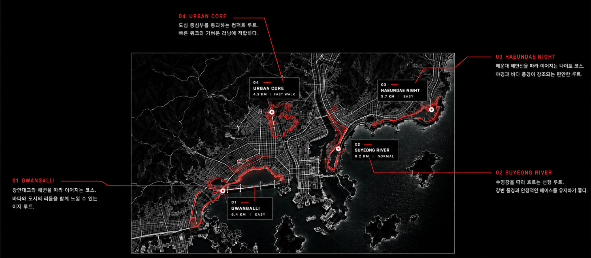
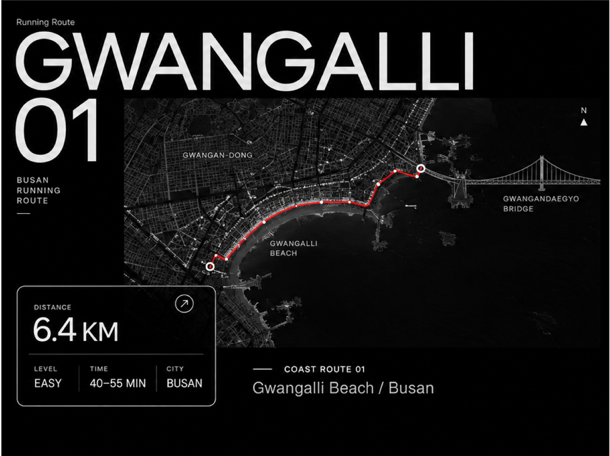
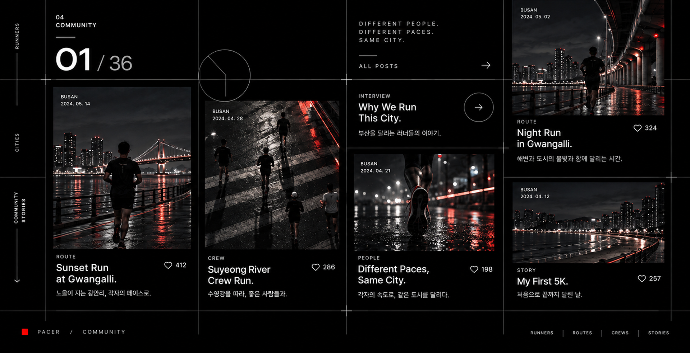

ABOUT PACER
BRAND INTRODUCTION
PACER는 기록과 순위보다 각자의 페이스와 완주 과정에 집중하는
도시형 러닝 브랜드다. 빠르게 달리는 것보다 자신만의 리듬을 찾고,
끝까지 움직이는 경험을 중요하게 생각한다.
서로 다른 속도와 목적을 가진 사람들이 각자의 도시 안에서
자연스럽게 연결되고,
달리는 시간이 일상의 일부가 될 수 있도록 다양한 경험을 만들어나간다.
WE DON'T RACE, WE PACE
RUN
도시를 단순한 배경이 아닌 하나의 러닝 공간으로 바라본다.
부산의 해안, 강변, 야간 풍경처럼 서로 다른 환경을 러닝 루트로 구분하고,
각 코스의 거리와 특성, 위치를 지도 위에 시각화하였다.
사용자는 부산이라는 하나의 도시 안에서도 자신의 목적과 페이스에 맞는 루트를 선택할 수 있으며,
각 코스를 통해 서로 다른 도시의 리듬을 경험할 수 있다. PACER는 이를 통해 기록이나 속도보다
자신에게 맞는 방식으로 도시를 달리는 경험을 제안한다.


광안대교와 해변을 따라
이어지는 해안 러닝 코스
탁 트인 바다와 광안대교를 가장 가까이에서
마주하며 달리는, 부산을 대표하는 러닝 루트입니다.
바다와 도시의 리듬을
함께 느낄 수 있는 루트
부산의 활기찬 도시 풍경과 잔잔한 파도 소리가
나란히 이어지는, 도시와 자연이 공존하는 코스입니다.
석양과 야경이 가장 잘 어울리는
코스로 추천하는 시간
광안리의 아름다운 해안 풍경을 따라 달리며
낮과 밤의 서로 다른 분위기를 경험할 수 있습니다.
기록보다 자신의 페이스로
완주하는 경험에 집중
아름다운 풍경 속에서, 빠름보다 지속하는 즐거움을
느낄 수 있는 PACER의 러닝 철학이 담긴 코스

© 2026 Kim Gyungeun. All Rights Reserved.